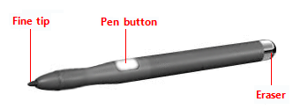
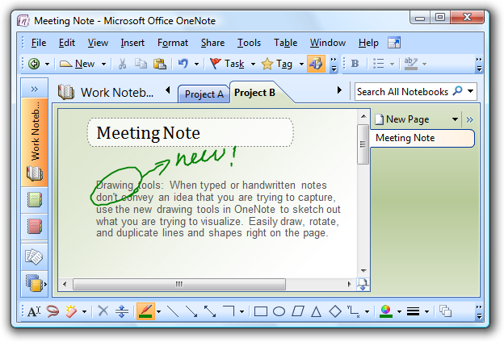
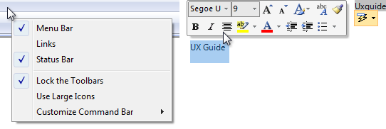
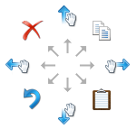
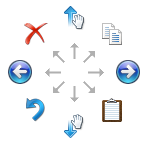
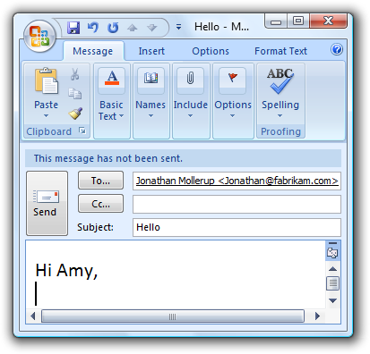
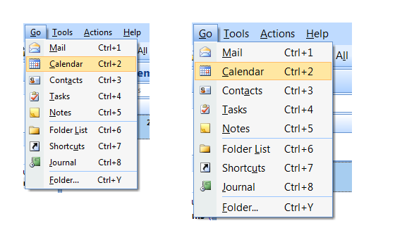
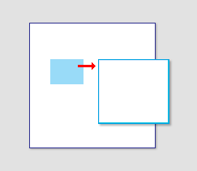
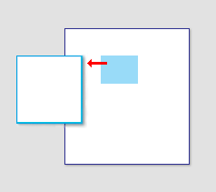

[!NOTE] This design guide was created for Windows 7 and has not been updated for newer versions of Windows. Much of the guidance still applies in principle, but the presentation and examples do not reflect our current design guidance.
All Microsoft Windows applications should be pen enabled. And doing so is easier than you think.
Pen input refers to the way Windows lets you interact directly with a computer using a pen. A pen can be used for pointing and also for gestures, simple text entry, and capturing free-form thoughts in digital ink.
The pen used for input has a fine, smooth tip that supports precise pointing, writing, or drawing in ink. The pen may also have an optional pen button (used to perform right-clicks) and eraser (used to erase ink). Most pens support hover.

A typical pen.
When the pen is used for handwriting, the user's strokes can be converted to text using handwriting recognition. The strokes can be kept just as they were written, with recognition performed in the background to support searching and copying as text. Such unconverted strokes are called digital ink.

An example of ink input.
Most Windows programs are already pen-friendly in that a pen can be used instead of a mouse, the pen works smoothly for most important tasks and interactions, and the program responds to gestures. A program becomes handwriting-friendly when it assists with handwritten text input. A program becomes ink-enabled when it can handle ink directly, instead of requiring that pen strokes be translated to text or equivalent mouse movements. This allows users to write, draw, and add comments in free-flowing, high-quality digital ink. Collecting ink is different than collecting mouse events, because ink requires higher resolution and a higher sample rate, and it can also add nuance with pressure and tilt. For information about creating handwriting friendly and ink-enabled programs, see Integrating Ink and Text Input Using the Pen.
When positioning a pen, there is less need for a cursor because the tip represents itself. However, for targeting assistance, Windows provides a tiny pen cursor that indicates the current pen location. Unlike the mouse pointer it replaces, the pen cursor is not needed unless the pen is near the display, so it disappears after a few seconds of inactivity to allow an unobstructed view of information.
Most pen-friendly programs support gestures. A gesture is a quick movement of the pen on a screen that the computer interprets as a command, rather than as a mouse movement, writing, or drawing. One of the quickest and easiest gestures to perform is a flick. A flick is a simple gesture that results in navigation or an editing command. Navigational flicks include drag up, drag down, move back, and move forward, whereas editing flicks include copy, paste, undo, and delete.
All pointers except the busy pointer have a single pixel hot spot that defines the exact screen location of the pointer. The hot spot determines which object is affected by the interaction. Objects define a hot zone, which is the area where the hot spot is considered to be over the object. Typically, the hot zone coincides with the borders of an object, but it may be larger to make interaction easier.
Because a pen can point more precisely than a finger, if your user interface works well for touch it will also work well for a pen. Consequently, this article is primarily focused on adding pen support to programs that have already been designed for touch.
Note: Guidelines related to mouse, accessibility, and touch are presented in separate articles.
Using a pen for input has the following characteristics:
All Windows programs should have a good pen experience. Users should be able to perform your program's most important tasks efficiently using a pen. Some tasks, like typing or detailed pixel manipulation, aren't appropriate for a pen, but they should at least be possible.
Fortunately, if your program is already well designed and is touch-friendly, providing good pen support is easy to do. For this purpose, a well-designed program:
Unfortunately, the converse is also true if your program isn't well designed, its shortcomings are going to be especially obvious to users who use a pen.
If you aren't experienced with using a pen, the best introduction is to learn by doing. Get a pen-enabled computer, put the mouse and keyboard aside, and do the tasks that you normally do using just a pen. Be sure to try both ink-enabled programs, such as Windows Journal, and programs that aren't ink-enabled. If you have a Tablet PC, experiment with holding it in different positions, such as on your lap, lying flat on a table, or in your arms while you're standing. Try using it in portrait and landscape orientation, and holding the pen for writing and just for pointing, in your left hand as well as your right.
As you experiment with using a pen, you'll discover that:
Task locality reduces tedious repeating cross-screen movements. To minimize hand movements, locate controls close to where they are most likely going to be used.
Incorrect:
In this example from Windows XP, the color palette is too far from where it is likely to be used.
Consider that the user's current location is the closest a target can be, making it trivial to acquire. Thus, context menus take full advantage of Fitts' Law, as do the mini-toolbars used by Microsoft Office.

The current pointer location is always the easiest to acquire.
Small targets near the display edge can be difficult to target, so avoid placing small controls near window edges. To ensure that controls are easy to target when a window is maximized, either make them at least 23x23 pixels (13x13 DLUs), or place them away from the window edge.
System gestures
System gestures are defined and handled by Windows. As a result, all Windows programs have access to them. These gestures have equivalent mouse, keyboard, and application command messages:
| System gesture | Synthesized equivalent message |
|---|---|
| Hover (when supported) | Mouse hover |
| Tap (down and up) | Mouse left-click |
| Double tap (down and up twice) | Mouse double left-click |
| Press and hold (down, pause, up) | Mouse right-click |
| Drag (down, move, up) | Mouse left-drag |
| Press, hold, and drag (down, pause, move, up) | Mouse right-drag |
| Select (down, move over selectable objects, up) | Mouse select |
Developers: For more information, see SystemGesture Enumeration.
Flicks
Flicks are simple gestures that are roughly the equivalent of keyboard shortcuts. Navigational flicks include drag up, drag down, move back, and move forward. Editing flicks include copy, paste, undo, and delete. To use flicks, your program only needs to respond to the related keystrokes commands.

The eight flick gestures and their default assignments in Windows 7. The navigation flicks were changed to correspond to panning (where the object moves with the gesture) instead of scrolling (where the object moves in the opposite direction of the gesture).

The eight flick gestures and their default assignments in Windows Vista.
The navigational flicks have natural mapping, so they are easy to learn and remember. The editing flicks are diagonals that require more precision and their mappings are not as natural (flick towards the Recycle Bin to delete, flick in the Back arrow direction to undo), so these aren't enabled by default. All flick actions can be customized using the Pen and Input Devices control panel item.
| Flick | Synthesized equivalent message |
|---|---|
| Flick left | Forward command (Back command for Windows Vista) |
| Flick right | Back command (Forward command for Windows Vista) |
| Flick up | Keyboard Scroll Down |
| Flick down | Keyboard Scroll Up |
| Flick up-left diagonal | Keyboard Delete |
| Flick down-left diagonal | Keyboard Undo |
| Flick up-right diagonal | Keyboard Copy |
| Flick down-right diagonal | Keyboard Paste |
Application gestures
Applications can define and handle other gestures as well. The Microsoft Gesture Recognizer can recognize over 40 gestures. To use application gestures, your program must define the gestures it recognizes, and then handle the resulting events.
Responsiveness and consistency
Responsiveness is essential for creating pen experiences that feel direct and engaging. To feel direct, gestures must take effect immediately, and an object's contact points must stay under the pen smoothly throughout the gesture. Any lag, choppy response, loss of contact, or inaccurate results destroys the perception of direct manipulation and also of quality.
Consistency is essential for creating pen experiences that feel natural and intuitive. Once users learn a standard gesture, they expect that gesture to have the same effect across all applicable programs. To avoid confusion and frustration, never assign non-standard meanings to standard gestures. Instead, use custom gestures for interactions unique to your program.
Editing ink and text
Editing ink and text are among the most challenging interactions when using a pen. Using constrained controls, appropriate default values, and auto-completion eliminates or reduces the need to input text. But if your program involves editing text or ink, you can make users more productive by automatically zooming input UI up to 150 percent by default when a pen is used.
For example, an e-mail program could display UI at normal size, but zoom the input UI to 150 percent to compose messages.

In this example, the input UI is zoomed to 150 percent.
If you do only four things...

In this example, the system metric for menu height was changed.
If a window is contextual, always display it near the object that it was launched from. Place it out of the way so that the source object isn't covered by the window.
If displayed using the mouse, when possible place the contextual window offset down and to the right.

Show contextual windows near the object that it was launched from.
If displayed using a pen, when possible place the contextual window so as not to be covered by the user's hand. For right-handed users, display to the left; otherwise display to the right.

When using a pen, also show contextual windows so that they aren't covered by the user's hand.
Developers: You can distinguish between mouse events and pen events using the GetMessageExtraInfo API. You can determine the user's handedness using the SystemParametersInfo API with SPI_GETMENUDROPALIGNMENT.
When referring to pen input: